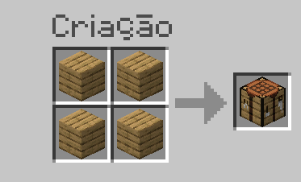
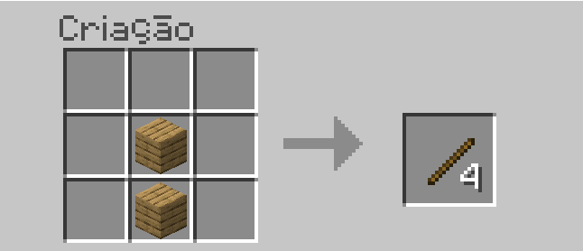
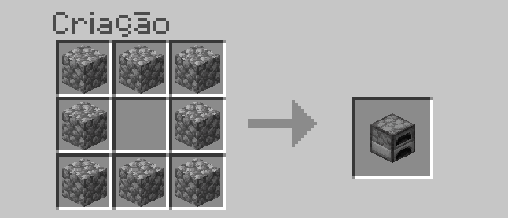
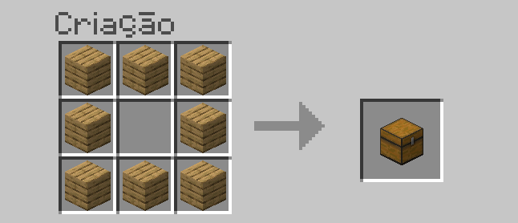
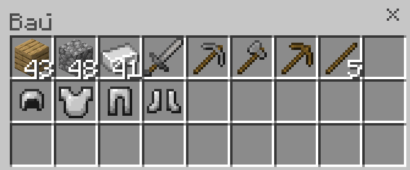

Modo sobrevivencia
1- Pegue madeiras e faça uma bancada de trabalho.
 Assim que começar seu mundo no minecraft, procure uma árvore e dê golpes para que ela se quebre,
pegue o bloco de madeira que irá cair, e em seu inventário você poderá refinar este bloco de madeira.
Logo em seguida faça uma bancada de trabalho para construir todos os itens necessários do jogo !
2- Faça gravetos e uma piacreta de madeira.
Após construir um graveto, faça uma picareta de madeira e vá coletar pedras, minérios e outros recursos para melhorar seu inventário.
Com a picareta de madeira você pode coletar pedregulhos, minério de ferro, carvão, e alguns blocos de construção.
3- Construa equipamentos melhores.
Com a fornalha, você pode cozinhar suas comidas, seus minérios e derreter outros itens; A fornalha é um item indispensável para seu incio de jogo.

A espada de pedra é uma arma muito boa para seu inicio de jogo, ela tira 6 pontos de dano e pode te proteger de muitos ataques zumbis por ai.

O Machado de pedra é ultilizzdo para coletar madeiras e outros itens que sejam feitos de madeiras.
A picareta de pedra tem uma durabilidade maior do que a picareta de madeira, e tambem consegue fazer uma mineração bem mais rapida.
4- Usando a fornalha.

Use a fornalha para derreter minérios e outras pedras preciosas, logo em seguida crie armaduras para te deixar mais forte.
5- Criando armaduras.

Um capacete de ferro pode te proteger em 5% de todo o dano atingido na cabeça, e também quando são encantados com "respiração e durabilidade", te deixam ainda mais poderoso.

O peitoral de ferro é uma das partes mais fortes de sua armadura, ele protege 20% de todo dano recebido no peito e tem uma resistencia muito alta, pode ser encantado com "proteção e durabilidade".

As calças protegem somente 8% de danos atingidos na parte inferior do corpo, e podem ser encantados com "proteção e espinhos", esses encantamentos te protegem e espelham os danos dos inimigos.

As botas podem ser encantadas com "peso pena e passos leves", são encantamentos que te deixam mais rapido na terra e na água, as botas te dão uma proteção de 10% dos danos de queda.
6- Criando baús
Pegue suas madeiras que restaram e crie um baú para que você possa guardar e armazenar itens, baús são essenciais para sua jogatina.
Veja nessa imagem como se usa um baú de forma organizada.